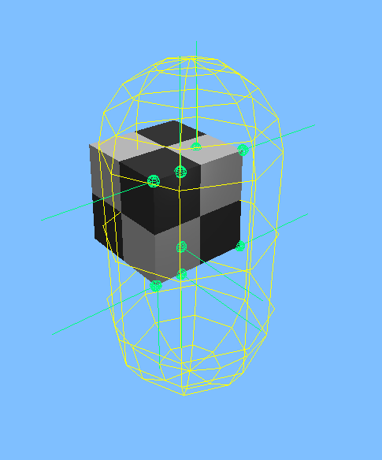
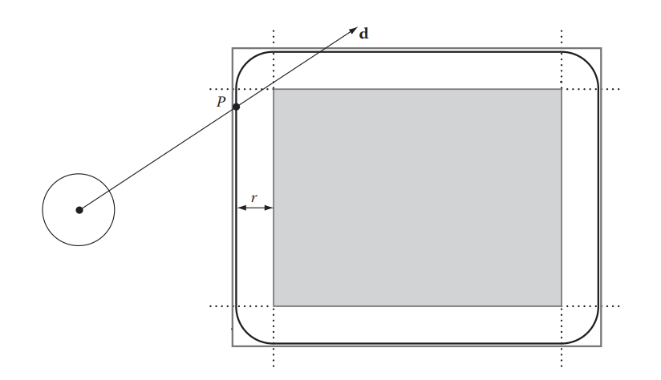
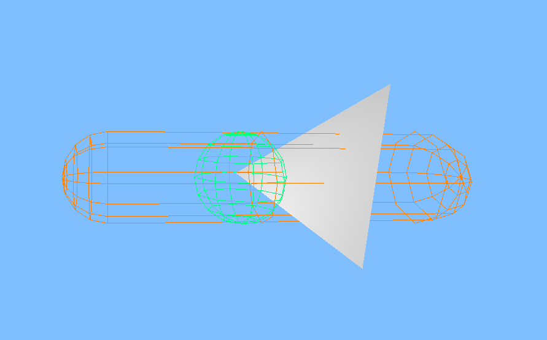
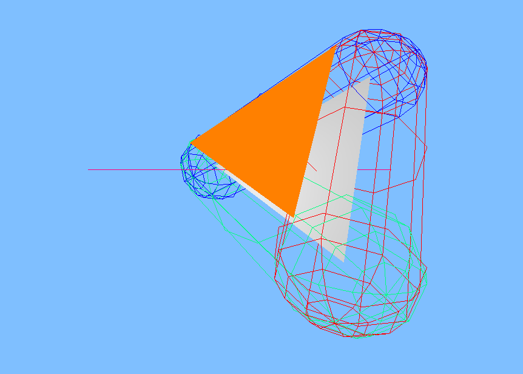
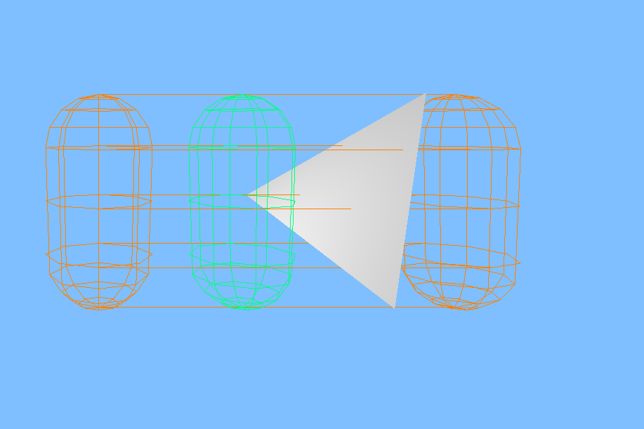
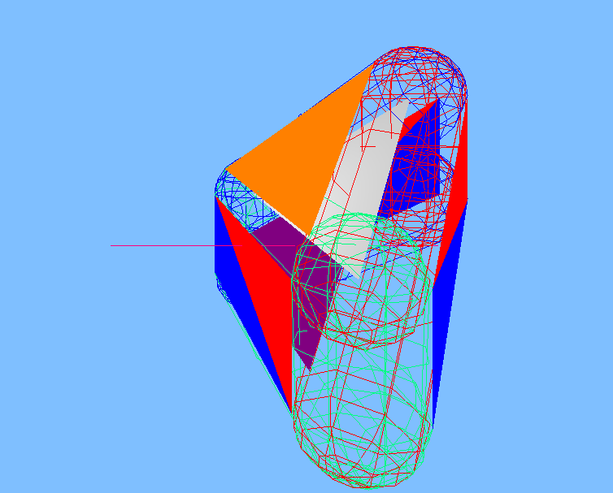

Specialisation
For four weeks I got to work on a specific topic to specialise within. I chose to work with collision detection, using C++ in the schools in-house engine called TenGine. I specifically chose this topic as I enjoy vector math and visualising problems in my head.
I also wanted to improve the experience of future students using this engine, as the only collision types that existed previously were line intersections and sphere overlap collisions.
Capsule Overlap Detection
The first problem to tackle in order to implement a Capsule Overlap check was to first define in a clear and easy way what a capsule is. Since spheres in the engine are defined as points with a radius, I saw it fit to define my capsule as a line with a radius.
With this defenition in place, I needed a function for finding the closest point on a triangle to the capsules line. Luckily there exists a lot of documentation of such an algorithm so it was trivial to implement. I chose to follow an example from Christer Ericson's book called Real Time Collision Detection.

Sphere Sweep
When diving down the rabbit hole that is collision detection of swept shapes, I decided to start my research with how to sweep a sphere. During my research, I discovered an area of geometry called Minkowski sums.
With this, I could transfer different attributes from one shape into another. Allowing me to transfer the radius of the sphere sweep into the triangle, converting the problem to a line intersection against an expanded triangle.
This expanded triangle consists of a triangle face that is extruded along its normal by the radius of the sphere, together with three capsules on each edge with the radius of the sphere (or cylinders for each edge and spheres on each vertex).
Some potential use cases for this type of collision include things such as large projectiles like cannonballs. Swept spheres were used extensively to calculate the collisions and travel path of the projectiles in my second game project Entropy.



Capsule Sweep
With the code for transferring a radius into a triangle already done (Sphere Sweep), I could convert the capsule sweep into what can be best described as a plane or a swept line against a rounded triangle prism.
Using the logic of Minkowski difference, I could also transfer the height property of the capsule sweeps "plane" or extruded line into the triangle too.
Doing all the steps of a Sphere Sweep, as well as extruding the triangle opposite of the height of the swept capsule, adding capsules for each new edge generated alongside triangles for the walls of the new expanded shape, I successfully boiled the complicated swept capsule - triangle intersection down into a line intersection against multiple simple shapes.

